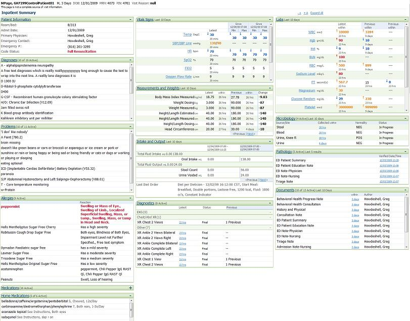

|
MPages Help Pages : Overview of Inpatient Summary
This page last changed on Apr 12, 2010 by MB9512.
The Inpatient Summary MPage is focused on providing a patient summary view for hospital clinicians. Also, this page allows clinicians to take action directly from it.  The Inpatient Summary MPage contains the following components: You can hover over the section header of the MPage to get result details or click on the header to be taken to the related patient information in PowerChart. For more information see the All About Inpatient Summary Reference Page. Tasks
|
| Document generated by Confluence on Aug 19, 2011 12:53 |